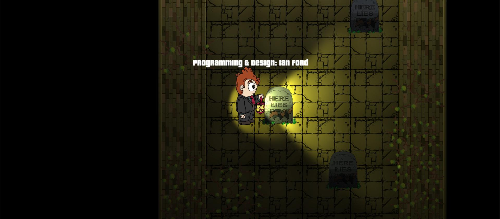

Thank you for checking out my website. Right now I'm finishing my last class for my Bachelor of Arts in Computer Science through Indiana University. I actually started out as a BS but there's little space in that curriculum for game development so my major was adjusted to accommodate my independent development and work.
Previously I worked with Shahzeen Attari, website here, through her research lab at IU. I helped with the development of Waterworks a real-time city management sim revolving around effective infrastructure for water use. Since the game is still in-production and I'm not completely involved I commented the code and wrote a technical design document behind.
While working on Waterworks I spent the summer (of 2016) in Los Angeles interning for Marvel on the Video Game Production team. I learned a great deal about handling each aspect of development from the importance of brand image to resource management to effective communication and more.
Before Waterworks I teamed up with Mike Sellers who had just become a professor at IU to prototype game ideas. We started a 4X style strategy game and I got acquainted with all new kinds of design ideas. I even implemented a fog of war that after two weeks of working on we scrapped because it didn't 'fit'. This was pure rapid prototyping, just iterating on what we liked and cutting everything else out.
My first real experience in game development was my internship at Plow Digital/Plow Games the summer of 2014. The lead programmer there had me make a prototype of many different types of games in order to teach me best practices at the company and get me acquainted with Unity. After two weeks of prototyping they had me start modifying XMl files, design in-game levels, playtest + debug, and develop games and applications.

Socialize with me digitally